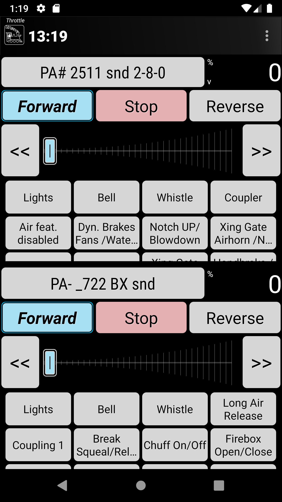
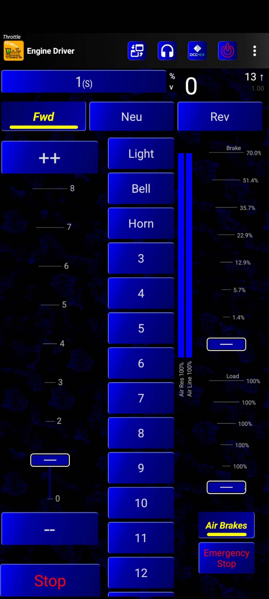

Preferences
{kind=link}
Engine Driver is highly configurable. There are over 100 different items than can be changed to allow you customise your experience with Engine Driver.
Most configuration options are found in the Preferences which is accessed via the overflow menu, sometimes called a ‘hamburger menu’, which is normally three dots (⁞) or three bars (≡).
Advanced Preferences
Show Advanced Preferences?
By default, only a small number of core preferences are displayed on the Preferences Screen.
{kind=link}
If you enable this preference Engine Driver will immediately show all the additional preferences.
Device Preferences
The following preferences provide options for the ‘whole’ of Engine Driver.
Throttle Name
Use this to enter a unique name for your device/phone. The name will appear in the WiThrottle window in JMRI.
While not significant on a single user layout, having a name on the device can be useful in club or multi user environments, especially when trying to sort out issues.
Screen orientation
There are four options to choose from:
Portrait
Landscape
Auto-Rotate
Auto-Web
Example |
Theme |
|---|---|

|
Portrait |
Landscape |
|
see above |
Auto-Rotate |
Auto-Web |
{kind=link}
{kind=link}
Theme/Style
Themes provide different colours and textures to the buttons, backgrounds, sliders etc. You can switch between different themes by changing this preference.
There are a number themes to choose from:
Original (Checker Plate)
High contrast
High contrast outline
Dark
Colourful
Neon Blue
Example |
Theme |
|---|---|

|
Original theme |
|  | High contrast theme |
|
|
High contrast |

|
Dark theme |

|
Colourful theme |
|  | Neon Blue theme |
{kind=link}
{kind=link}
Localisation
Changing the Localisation primarily changes the language used in the menus, buttons and messages throughout Engine Driver.
For English, it also changes the railroad/railway terminology (e.g. Selecting ‘Use Phone’s global setting’ and having the device/phone set to ‘English (Australia)’ or ‘English (UK)’ results in the term ‘Points’ to be displayed rather than ‘Turnouts’ which is displayed when ‘English (US)’ is selected). And in the Preferences Screen and the Throttle Screen Layout selection preference (where ‘shunting’ is displayed rather than ‘switching’). This is not guaranteed to operate on all text on all screens.
Supported localisations are:
Use Phone’s global setting
- Will use any of the localisations below depending on what your system is set to it
This the default settingEnglish (US)
Engine Driver will default to this if no matching language is found for the previous optionEnglish (AUS)
English (NZ)
English (UK)
Catalan
Czech
Italian
Japanese
Spanish
French (FR)
French (CA)
German (DE)
German (AT / CH / LI)
Portuguese
Left/Right Swipe Preferences
The following preferences provide options for how left/right swipes work and which screens are available when you swipe left / right.
Disable full screen Swipe?
If this preference is enabled, only the Action Bar can be swiped to change screens. This is useful if you find it difficult to swipe left and right on either of the two Web Views without accidently changing screens.
Swipe through Web?
If this preference is enabled, the Web View Screen is included in the list of screens when swiping left/right between screens.
Swipe Through Turnouts/Points?
If this preference is enabled, the Turnouts/Points Screen is included in the list of screens when swiping left/right between screens.
Swipe through Routes?
If this preference is enabled, the Routes Screen is included in the list of screens when swiping left/right between screens.
Hide Instructional Hints
If this preference is enabled, most of the less important ‘Toast’ message will not be shown.
Throttle Screen Appearance Preferences
The following preferences provide options for the appearance of the Throttle Screen.
Throttle Screen Layout
Layout Name |
No. |
Slider |
Web |
Function |
Throttle |
Direction |
|---|---|---|---|---|---|---|
Horizontal |
1 - 3 |
H |
✓ |
✓ |
0-100 |
✓ |
Vertical |
2 |
V |
✓ |
✓ |
0-100 |
✓ |
Big Buttons - Left |
1 |
🗴 |
🗴 |
✓ |
0-100 |
✓ |
Big Buttons - Right |
1 |
🗴 |
🗴 |
✓ |
0-100 |
✓ |
Vertical - Left |
1 |
V |
✓ |
✓ |
0-100 |
✓ |
Vertical - Right |
1 |
V |
✓ |
✓ |
0-100 |
✓ |
Vertical Shunting |
2 |
V |
✓ |
✓ |
-100 - 0 - +100 |
🗴 |
Vertical Shunting - Left |
1 |
V |
✓ |
✓ |
-100 - 0 - +100 |
🗴 |
Vertical Shunting - Right |
1 |
V |
✓ |
✓ |
-100 - 0 - +100 |
🗴 |
Horizontal Shunting |
1 - 3 |
H |
✓ |
✓ |
-100 - 0 - +100 |
🗴 |
Simple |
1 - 6 |
V |
🗴 |
see note |
0-100 |
✓ |
Tablet Switching Left |
1 - 6 |
V |
✓ |
✓ |
-100 - 0 - +100 |
🗴 |
Tablet Vertical Left |
1 - 6 |
V |
✓ |
✓ |
0-100 |
✓ |
Semi-Realistic Left |
1 |
V |
🗴 |
✓ |
0-100 |
✓ |
{kind=link}
{kind=link}
{kind=link}
{kind=link}
{kind=link}
{kind=link}
{kind=link}
{kind=link}
{kind=link}
{kind=link}
{kind=link}
Notes:
The number is brackets after the Throttle Screen Layout name is the number of throttles that the layout can support.
The ‘Simple’ Throttle Screen Layout is designed to allow for up to 6 throttles simultaneously.
It is recommended that this be used on a tablet device, because of the screen real estate demands that 6 throttles requires.
When this Throttle Screen Layout is selected, the Number of Throttles preferences options is activated. You can then use this to restrict the number of throttles being displayed on the ‘Simple’ Throttle Screen Layout.
Also the Function Buttons Area size preferences options is activated. You can then use this to control how many Function Buttons are displayed with each throttle. By default, no Function buttons will be shown.
If you have selected In Phone Loco Sounds, then you may want to set this to three or four (for Mute, Bell and Whistle/Horn, Short Horn/whistle).
Engine Driver will automatically reload the Throttle Screen after closing the preferences screen.
Number of throttles
This preference allows you to set how many throttles to display on the Throttle Screen. (Limited by the selected Throttle Screen Layout.)
Only available for the following Throttle Screen Layouts:
Horizontal (1-3)
Horizontal Shunting / Horizontal Switching (1-3)
Simple (1-6)
All other layouts will automatically change this preference to the fixed number for that particular layout.
Haptic Feedback (Vibration) Preferences
The following preferences provide options for how and when the Device / Phone will vibrate on certain actions.
Haptic Feedback (Vibration)
If this preferences is enabled, Engine Driver will the device / phone will provide Haptic feedback (vibrate) on speed changes.
Options:
None
Slider - Every Step
Slider - Skip some at 29, 100, 128 Steps
Haptic Feedback Duration
You can use this preference to change the duration of each vibration (in milliseconds).
Decrease Loco No. height?
If this preference is enabled Engine Driver will use smaller buttons for the Loco Number, Speed and Direction buttons.
Loco Address instead of Name?
If this preference is enabled Engine Driver will show loco DCC Address(es) instead of the Server Roster Name(s) on the Throttle Screen. It will ignore the Server Roster name for the Select button label.
This changes the button label only. It has no other functional effect.
Default Function Preferences
The following preferences provide options for when and how the Default Function Labels are displayed.
Use default function labels?
If this preference is enabled Engine Driver will always display the Default Function Labels (configured inside Engine Driver) instead of labels from Server Roster entries. It will ignore the Server Roster for the Function button labels.
This changes the button labels only. It has no other functional effect.
Note
Also see the Default Function Screen for more information.
Number of Default Functions
This preference is used to limit the number of Function Labels shown for selected locos that are not from the Server Roster, or where you have set the Use default function labels? preference.
Note
Also see the Default Function Screen for more information.
Number of Default Functions for Roster
This preference is used to limit the number of Function Labels shown for Server Roster Entries that don’t have any function Labels configured.
Note
Also see the Default Function Screen for more information.
Throttle Web View Preferences
The Throttle Web View is a smaller (approximately half page) Web browser window that will appear at the bottom of the Throttle Screen, and is difference to the main Web View Screen. The two are configured independently.
The following preferences provide options for options for Throttle Web View appearance.
Throttle Web View?
If this preference is enabled to other than ‘none’, Engine Driver will show a Web View area on the Throttle Screen which is essentially a Web Browser.
Options are:
none
Top
Bottom
‘Top’ and ‘Bottom’ refert to top or bottom of the Throttle Screen.
Larger Throttle Web View?
This preference is used to instruct Engine Driver to increase the Throttle Web View size to 60% for small screens
Initial throttle Web Page
This preference is used to set the initial throttle Web Page (such as ‘/panel/’) for when the Throttle Web View first opens.
Enter the initial Web Page (such as ‘/panel’) for the Web View Screen
Note that this is different to the ‘Web View Screen’ initial Web Page which is set with the Initial Web Screen Page preference.
Swipe Up-Down Preferences
The following preferences provide options for options for swipe up or down on the Throttle Screen.
Use Immersive Mode for Throttle view?
If this preference is enabled, Engine Driver will display the Throttle view full screen. The Navigation bar and the Status Bar will be hidden, Swiping down from off the screen will temporarily show them again.
Hide Toolbar in Immersive Mode?
If this preference is enabled, along with Use Immersive Mode for Throttle view? preference will display the Throttle view in and extended full screen. The Action Bar, along with the Navigation bar and the Status Bar will be hidden, Swiping down from off the screen will temporarily show the the Navigation bar and Status bar again, but not the Action Bar.
It is essential, that you can set Swipe down action in the Throttle view? or Swipe up action in the Throttle screen? preferences to temporarily disable this and allow you to reach the menu.
Swipe down action in the Throttle view?
This preference is used to select what should happen when you swipe down on the Throttle Screen.
Options:
None
Hide Web View
(requires Throttle Web View? preference to be set)Lock and Dim Screen
Dim Screen
Immersive Mode temporarily enable-disable
Switch Throttle Screen Layouts
Swipe up action in the Throttle screen?
This preference is used to select what should happen when you swipe up on the Throttle Screen.
Options:
None
Hide Web View
(requires Throttle Web View? preference to be set)Lock and Dim Screen
Dim Screen
Immersive Mode temporarily enable-disable
Switch Throttle Screen Layouts
Screen Dimming % Value
This preference is used to enter the brightness setting/level to use when dimming the screen (0%-99%). Disables Auto or Adaptive Brightness if set.
Requires that one of the following preferences is enabled to Lock and Dim Screen or Dim Screen to have any effect:
Accelerometer (Shake) Preferences
The following preferences provide options for options for what happens when you shake your device / phone while on the Throttle Screen.
Shake Action
This preference is used to select what happens when you shake your device phone.
Options:
None
Hide Web View
(requires Throttle Web View? preference to be set)Lock and Dim Screen
Dim Screen
Immersive Mode temporarily enable-disable
Switch Throttle Screen Layouts
Shake Threshold
This preference is used to enter the threshold level at which the shake will register. (1.5 - 3.5) Lower value will respond to a gentle action. Requires restart of engine Driver after changing to take effect.
Background Image Preferences

The following preferences provide options for showing a background image on the Throttle Screen.
Background Image
This preference is used to have Engine Driver show a background image on the Throttle Screen, as long as one is selected in the Background Image File Name preference.
Background Image File Name
This preference is used to select a image file that will be used as the background o the Throttle Screen. This has no effect unless the Background Image preference is enabled.
Clicking on this preference launches your image chooser app. As this can be different on different devices / manufacturers, it is impossible to describe the required steps here. In general, use the app’s navigation features to find the image you want and select it.
Note: You can install additional apps to do the same job for the Play Store.
Background Image Position
This preference is used to select how the background image will be positioned and/or resized on the screen.
Options include:
Fit - Shrink/expand
Fill - Crop one edge pair
Center - No scaling
Fit - Shrink only
Fill - Distort if needed
Fit - Shrink/expand
Using this option will cause the image to be:
proportionally reduced in size in too big to fit the screen, such that the image fills the screen in at least one dimension
proportionally increased in size in too small to fill the screen, such that the image fills the screen in at least one dimension
Fill - Crop one edge pair
Using this option will cause the image to be:
proportionally reduced in size in too big to fit the screen, such that the image will be cropped on either the top/bottom or the sides, so that the image fills the screen
proportionally increased in size in too small to fill the screen, such that the image will be cropped on either the top/bottom or the sides, so that the image fills the screen
Center - No scaling
Using this option will cause the image to be centred on the screen. It will not be either shrunk or expanded.
Fit - Shrink only
Using this option will cause the image to be proportionally reduced in size in too big to fit the screen, such that the image fills the screen in at least one dimension. If it to smaller than the screen in both dimensions it will not be resized.
Fill - Distort if needed
Using this option will cause the image to be forcibly:
reduced in size in too big to fit the screen, distorting the image if needed to fill the entire screen in both dimensions
increased in size in too small to fill the screen, distorting the image if needed to fill the entire screen in both dimensions
Semi-Realistic Throttle Preferences
Refer to Preference Settings for the SRT for information on the SRT.
Acceleration Speed Step Repeat Delay
This preference adjusts how long between acceleration speed steps repeats (in milliseconds).
Smaller is faster.
This setting (combined with the Speed Step Amount) is used to provide a basic level of SRT create momentum to loco movement.
Think of it providing a smoothing function to the speed control (given that the Load settings will be the primary means of determining major impacts on train performance)
The default settings provide a moderate momentum.
To effectively turn off this basic SRT momentum (and rely entirely on the decoder momentum),
set the delay time to 100,
step amount to 40.
Deceleration Speed Step Repeat Delay
This preference adjusts how long between deceleration speed steps repeats (in milliseconds).
Smaller is faster.
Note
See description of the SRT throttle and speed changes on the Semi-Realistic Throttle (SRT) page.
Speed Step Amount
This preference adjusts how much the actual speed step jumps each step to the target speed.
Larger is faster.
Note
See description of the SRT throttle and speed changes on the Semi-Realistic Throttle (SRT) page.
Maximum Throttle Percentage (SRT)
This preference adjusts the maximum allowed slider value in % in ALL throttle sliders in ALL Throttle Screen types.
Note
See description of the SRT throttle and speed changes on the Semi-Realistic Throttle (SRT) page.
Throttle Notches
This preference adjusts how the Throttle slider is displayed. Either as a percentage, or by a specific number of steps/notches*
Note
See description of the SRT throttle and speed changes on the Semi-Realistic Throttle (SRT) page.
Number of Brake Steps
This preference adjusts the number of steps in the Brake Slider. It affects the display of the Brake control.
Notes:
The percentage Brake applied at each step is annotated on the brake view
The amount of brake per step increases exponentially.
Note
See description of the SRT Air Brakes on the Semi-Realistic Throttle (SRT) page.
Maximum Brake Percentage
This preference adjusts the maximum percentage of the Brake slider. (5-100%) 100%=immediate zero
Note: Setting the Maximum Brake to 100% will result in the unrealistic speed drop to zero almost immediately, if the Brake is dragged to the top of the slider.
Note
See description of the SRT Air Brakes on the Semi-Realistic Throttle (SRT) page.
Disable the Air Reservoir
If this preference checked the fill state of the air reservoir and air will not impact available brakes.
Note
See description of the SRT Air Brakes on the Semi-Realistic Throttle (SRT) page.
Rate the air brakes refresh
This preference adjusts the rate that the Air Brakes will refresh/refill (in milliseconds).
Smaller is faster.
Note
See description of the SRT Air Brakes on the Semi-Realistic Throttle (SRT) page.
Number of Load Steps
This preference adjusts the number of steps in the Load Slider. It affects the display of the Load control.
Notes:
The Load applied at each step is annotated on the Load view
The amount of Load per step increases exponentially.
Note
See description of the SRT Load Slider on the Semi-Realistic Throttle (SRT) page.
Maximum Load Percentage
This preference adjusts the maximum percentage of the Load Slider.
(100-2000%) 100% = loco alone
Note
See description of the SRT Load Slider on the Semi-Realistic Throttle (SRT) page.
Decoder Brake Type
This preference sets whether or not to activate the Brake functions on the decoder.
Note
See description of the SRT integration with decoder braking on the Semi-Realistic Throttle (SRT) page.
Decoder Low Function Number(s)
This preference sets which Decoder Function(s) to activate at Low Brake Value.
(-1 to ignore)
Note
See description of the SRT integration with decoder braking on the Semi-Realistic Throttle (SRT) page.
Decoder Low Brake Value (Percent)
This preference sets what Percentage Brake to activate the Low Function(s)
Note
See description of the SRT integration with decoder braking on the Semi-Realistic Throttle (SRT) page.
Decoder Mid Function Number(s)
This preference sets which Decoder Function(s) to activate at Mid Brake Value.
(-1 to ignore)
Note
See description of the SRT integration with decoder braking on the Semi-Realistic Throttle (SRT) page.
Decoder Mid Brake Value (Percent)
This preference sets what Percentage Brake to activate the Mid Function(s)
Note
See description of the SRT integration with decoder braking on the Semi-Realistic Throttle (SRT) page.
Decoder High Function Number(s)
This preference sets which Decoder Function(s) to activate at High Brake Value.
(-1 to ignore)
Note
See description of the SRT integration with decoder braking on the Semi-Realistic Throttle (SRT) page.
Decoder High Brake Value (Percent)
This preference sets the Percentage Brake to activate the High Function(s).
Note
See description of the SRT integration with decoder on the Semi-Realistic Throttle (SRT) page.
Throttle Screen Action Bar Preferences

The following preferences provide options for showing additional buttons on the Action Bar, primarily at the top of the Throttle Screen though some will show on many screens.
Emergency Stop button?

If this preference is enabled Engine Driver will display an Emergency Stop button in Action Bar of most of the Main Screens.
Clicking this button will attempt to quickly stop all locos controlled by the device / phone. Locos controlled by other people/devices are not stopped.
Layout Power button?

If this preference is enabled Engine Driver will display a Layout Power button in Action Bar of most of the Main Screens.
Clicking this button will turn on/off the power to the track. The colour of the button will change colour:
‘Amber’ = unknown state
‘Red’ = Power is Off
‘Green’ = Power is On
Flashlight button?

If this preference is enabled Engine Driver will display a Flashlight button in action bar of the Throttle Screen.
Clicking this button will turn on/off the Device’s camera light.
This preference will be disabled (unable to be set) if the device does not have a camera.
Fast Clock Display

Use this preference to set the format for Fast Clock display in action bar:
none
12 Hour format
24 Hour format
Throttle Web View button?

If this preference is enabled Engine Driver will display a button in action bar of the Throttle Screen to show/hide Throttle Web View. Requires Throttle Web View? preference to be enabled.
Clicking this button will show / hide the Throttle Web View on the Throttle Screen.
Note: If the Throttle Web View? preference is not enabled the button will do nothing.
{kind=link}
In phone sounds button

If this preference is enabled Engine Driver will show an action bar button on the Throttle Screen to easily change the in phone loco sounds options.
Clicking the button shows the In Phone Loco Sounds Screen.
Show Server Description
{kind=link}
If this preference is enabled Engine Driver will display the description of the current server on the Action Bar.
App Icon button?
This preference allows you to select what the App icon will do when pressed.
None - Do nothing (Default)
Emergency Stop - Will do the same as pressing the Emergency Stop button.
Throttle Control Preferences
The following preferences provide options for how the throttle on the Throttle Screen will behave.
Speed Units
Use this preference to change how the speed is displayed and functions on all the throttles on the Throttle Screen.
Options:
Percent 0 - 100%
Auto Speed steps
8 steps
10 steps
14 steps
28 steps
128 steps
Note that the Speed button Change Amount preference will work in whatever units that you choose here.
Maximum throttle Percentage
This preference allows you to set the maximum allowed throttle slider value in % on all the throttles on the Throttle Screen.
Maximum throttle Change
This preference allows you to set the Maximum allowed throttle change in % on all the throttles on the Throttle Screen.
Todo
LOW: Maximum throttle Change Can’t remember when this is used.
Speed step on Decrement?
If this preference is enabled Engine Driver will force the Speed button Change Amount to be used when long pressing a lower speed on the slider. If not enabled, the speed will immediately jump to the touched speed.
Stop on Phone call?
If this preference is enabled Engine Driver will stop all loco(s) controlled by the device /phone when a phone call is answered or placed.
Direction change while moving?
If this preference is enabled Engine Driver will allow you to change the direction of the locos controlled by a throttle to instantly change direction. i.e. Both directions buttons are allows available.
Stop on direction change?
If this preference is enabled Engine Driver will stop the locos controlled by a throttle if you click the opposite direction while the loco(s) are moving. Effectively this means that the ‘opposite’ direction will (also) act like a stop button.
Consist Function Follow Preferences
These preferences allow for change the way DCC functions will behave in a Consist / Multiple Unit unit train.
Consist Functions - Follow Rule Style
Todo
LOW: Consist Functions - Follow Rule Style
Which style of rules to follow in a consist when function buttons are pressed.
Note
See the Consist Function Follow page for detailed information on the different rule types and how to use them.
Note: If ‘Use Default function labels’ is enabled, ‘Special…’ will also apply to the lead (or only) loco.
Options
Simple text matching (original)
Complex text matching - Lead loco always activated, Trail follows rules below
Special Exact - Lead and All Trail activated if they exactly match the function labels
Special Partial - Lead and All Trail activated if they partially match the function labels
Selective Lead Unit Sound?
If this preference is enabled Engine Driver will send Horn/Bell functions to only the Lead unit in an EngineDriver consist (mu).
(Only/any function with a ‘label’ that includes ‘bell’, ‘horn’ or ‘whistle’ as part of the label.)
Always treat F1 as Sound?
If this preference is enabled, F1 one is always treated as a sound and is always propagated to all locos in a consist.
Only relevant if the ‘Selective Lead Unit Sound’ preference is enabled.
This preference is ignored if ‘Complex’ or ‘Special’ options are selected in the ‘Consist Functions - Follow Rule Style’ preference.
Always treat F2 as Sound?
If this preference is enabled, F2 one is always treated as a sound and is always propagated to all locos in a consist.
Only relevant if the ‘Selective Lead Unit Sound’ preference is enabled.
This preference is ignored if ‘Complex’ or ‘Special’ options are selected in the ‘Consist Functions - Follow Rule Style’ preference.
If All matches Fail Action
Which locos in the consist should react to the function buttons if none of the rules below are meet.
For the ‘Complex’ option only. This preference is ignored if ‘Simple’ or ‘Special’ options are selected in the ‘Consist Functions - Follow Rule Style’ preference.
Note
Also see the Consist Function Follow page for information on the different rule types and how to use them.
Headlight specific String 1
Comma separated string(s) to look for in the function labels of the locos in the consist to recognise the 'Headlight' function (normally F0).
For the ‘Complex’ option only. This preference is ignored if ‘Simple’ or ‘Special’ options are selected in the ‘Consist Functions - Follow Rule Style’ preference.
Note
Also see the Consist Function Follow page for information on the different rule types and how to use them.
Headlight specific Action 1
Which locos in the consist should react to the found headlight functions.
For the ‘Complex’ option only. This preference is ignored if ‘Simple’ or ‘Special’ options are selected in the ‘Consist Functions - Follow Rule Style’ preference.
Each ‘action’ can be one of:
Lead Loco - Partial Match
Lead+Trail Locos - Partial Match
All Locos - Partial Match
Lead Loco - Exact Match
Lead+Trail Locos - Exact Match
All Locos - Exact Match
Note:
‘Lead+Trail’ refers to the first and last locos in the Consist / Multiple Unit train.
i.e. If there are only two locos, then ‘Lead+Trail Locos’ will give the same result as ‘All Locos’.
If more than two, then ‘Lead+Trail’ will give a different result. The locos in the middle will not receive the function.
Note
Also see the Consist Function Follow page for information on the different rule types and how to use them.
String 2, 3, 4, 5
For the ‘Complex’ option only. This preference is ignored if ‘Simple’ or ‘Special’ options are selected in the ‘Consist Functions - Follow Rule Style’ preference.
Note
Also see the Consist Function Follow page for information on the different rule types and how to use them.
Action for String 2, 3, 4, 5
This applies to Action for String 2, Action for String 3, Action for String 4, Action for String 5.
For the ‘Complex’ option only. This preference is ignored if ‘Simple’ or ‘Special’ options are selected in the ‘Consist Functions - Follow Rule Style’ preference.
Note
Also see the Consist Function Follow page for information on the different rule types and how to use them.
Additional Throttle Control Source Preferences
Engine Driver allows for methods, other than the touch screen, to control locos. The following preferences allow you change options relating to these.
Gamepad Preferences
Engine Driver will allows you to use the inexpensive gamepads to control speed. The following preferences allow you change options relating to these (if connected).
Note
See the Gamepad Operation page page for more information on using gamepads.
Gamepad type
Engine Driver supports the following gamepad types and modes:
None = disable gamepad support
Mocute iCade
Mocute iCade+DPAD
Mocute MTK
Mocute Android-Game
VRBOX/Android- A Mode
VRBOX/Android- A Mode - DPAD rotated
VRBOX/Android- C Mode
VRBOX/Android- C Mode - DPAD rotated
VRBOX/iOS- C Mode
VRBOX/iOS- C Mode - DPAD rotated
MagicseeR1 Android-Game B
Flydigi Wee 2
Utopia 360 Android-C
ESP32 DIY (4x4 Keypad +Encoder)
ESP32 DIY (3x4 Keypad +Encoder)
Keyboard
Choose the option that best supports your gamepad, ‘None’ to disable gamepad support.
Note
See the Gamepads page page for more information on selecting a gamepad.
Only One Gamepad?
If this preference is enabled Engine Driver will NOT check for multiple gamepads. Any additional gamepads will all control the same throttle.
Test Gamepad settings now!
This preference allows you to confirm that the chosen setting are working correctly. The Gamepad Test screen will launch IMMEDIATELY on selection.
Note: that you may need to repeat the test process when you return to the Throttle Screen and use the gamepad for the first time.
Gamepad DPAD Up action
Choose the action when you press the DPAD Up on the gamepad.
Note
See the Configuring the buttons section of the Gamepads page for information on the available options.
Gamepad DPAD Right action
This preference allows you to set the action that Engine Driver will perform when you press the DPAD Right on the gamepad.
Note
See the Configuring the buttons section of the Gamepads page for information on the available options.
Gamepad DPAD Down action
This preference allows you to set the action that Engine Driver will perform when you press the DPAD Down` on the gamepad.
Note
See the Configuring the buttons section of the Gamepads page for information on the available options.
Gamepad DPAD Left action
This preference allows you to set the action that Engine Driver will perform when you press the DPAD Left` on the gamepad.
Note
See the Configuring the buttons section of the Gamepads page for information on the available options.
Enforce Gamepad Testing?
If this preference is enabled you will be forced to test each gamepad every time they are connected.
Use Simple Test?
If this preference is enabled, when a gamepad is used for the first time in a session, you will only test that you can reduce speed, not have to test all eight standard buttons. (Normally the DPAD Down.)
ESU MobileControl II Options
The following preferences allow you to change the way a ESU MobileControl II behaves (if connected).
Control Knob options
The following preferences allow you to change the way the Control Knob on a ESU MobileControl II behaves (if connected).
Control Knob Zero Trim
This preference allows you to set the Control Knob zero trim setting. Smaller is closer to counter-clockwise end-stop position. Permitted range 0-255.
Direction Change at end-stop
If this preference is enabled Engine Driver will allow the Loco to change direction when the control knob is at counter-clockwise end-stop position.
Additional selected loco Indicator
If this preference is enabled additional highlights of the Loco Select button is displayed.
Options include:
None
Both Volume and Gamepad 1
Gamepad 1 only
Voice Response Preferences
Engine Driver can ‘speak’ certain events, most related to the use of the gamepads, where you may not be looking at the screen. These can also be helpful for the visually challenged. This is also referred to as ‘Text to Speech’ (TTS).
The following preferences allow you to change the way the Voice Responses behave.
Voice Response
This preference allows you to configure when Engine Driver should speak using Text to Speech (TTS).
Note: Effectively it is either ‘on’ or ‘off’, and you can use the following preferences to control what is actually spoken.
Options include:
none
Key Events Only
On Gamepad Throttle change
If this preference is enabled Engine Driver will speak when you select a different throttle on the gamepad.
Options include:
None
Throttle
Throttle + Loco
Throttle + Speed
Throttle + Loco + Speed
On Gamepad Speeds
If this preference is enabled Engine Driver will speak when the speed hits certain speeds when using a gamepad.
Speeds that will be spoken are:
None
Zero and Max
Zero and (Max + Speed)
Note that third option is mainly relevant when using the optional Limit Speed button where the ‘Max’ speed may not be 100%.
On Gamepad Test start
If this preference is enabled Engine Driver will speak when the gamepad test screen is launched.
On Gamepad Test complete
If this preference is enabled Engine Driver will speak when the gamepad test screen is successfully finished.
Note that what constitutes a successful finish of the test will change depending on the Use Simple Test? preference.
On Gamepad Test key press
If this preference is enabled Engine Driver will speak when each buttons is pressed in the gamepad test screen. Engine Driver will speak the name of the button and the function assigned to it.
Select Loco Preferences
The following preferences affect how the Select button appears and behaves.
Stop on Release?
If this preference is enabled Engine Driver will stop a loco(s) when it released from a throttle.
Drop Loco before acquire?
If this preference is enabled Engine Driver will Drop and release the current loco before acquiring new loco. i.e A throttle can only control one loco at a time. i.e. It is not possible to create an on-the-fly (in-phone) Consist / Multiple Unit train.
Allow loco select while moving?
If this preference is enabled the Select button is Disabled if the loco(s) is moving. i.e. It is not possible to Select (add or remove) locos if they are moving.
Default Address Length
This preference is used to set the default Loco Address Length.
Auto will set the length based on if the Address entered. If it is less that 127, Engine Driver will assume it ‘Short’ Address. 127 an higher will default to ‘Long’.
Options
Short
Long
Auto
Roster in Recent Locos?
If this preference is enabled Engine Driver will include Server Roster selections in Recent Locos list.
Roster Names in Recent Locos?
If this preference is enabled Engine Driver will include Loco names from the Server Roster in Recent list in the Loco Select Screen screen.
Maximum Recent Locos
This preference is used to set the maximum number of Recent Locos to show in the Recent Locos list on the Loco Select screen.
Control consist Lights on long click
If this preference is enabled Engine Driver will allow you to change the Lights of the individual locos in a Consist with a long click on the Loco Select button. You will be taken to the Consist Lights Edit Screen.
Note this only will work while the Select button is Enabled. If the Allow loco select while moving? preference is disabled, the Select button is Disabled while the throttle is greater than zero.
Filter Roster
Enter text into this preference to only show Server Roster entries with names containing that text only.
Note
Note this is that same as entering text in the filter field on the Select Loco Screen. i.e. changing it here will change it there and vice-versa.
Filter Roster by Roster Owner
Only show roster entries containing the specified text.
Roster Sort Order
This preference allows you to select the order that the roster entries will appear, by default, each time you start Engine Driver.
Options are:
Name
ID (DCC Address)
Position (the order they are received from the Command Station/Server)
Always use function labels from server
If this preference is disabled, Engine Driver will use the default labels for locos selected by address (not Roster), ignoring server default labels.
In Phone Loco Sounds
Important
The IPLS feature of Engine Driver uses the Notification features of Android, not the Media Player features.
That means that, at the Android system level, the volume is controlled by the ‘Ring and Notification volume’ not the ‘Media volume’.
Engine Driver can play synchronised loco sounds through the speaker of your Android device/phone, or through BlueTooth speakers connected to your device/phone.
There is built in Support for a number of different type of locos:
Steam - 4 in-built profiles
Diesel - 3 in-built profiles
Plus you can create you own Custom profiles
The following preferences provide options for the In Phone Loco Sounds (IPLS).
Note
For additional information see the In Phone Loco Sounds (IPLS) section of the Operations page.
Throttle 1 Loco Sounds
This preference allows you to select which profile of loco sounds in the phone for locos controlled by Throttle 1 on the Throttle Screen.
Options include:
Generic Steam (Fast)
Generic Steam (Slow)
Steam (Class 64)
Steam (Class 94)
Diesel (EMD 645 Turbo)
Diesel (GE 7FDL)
Diesel (EMD NW2)
+ any custom .IPLS files loaded on the Device/Phone
Throttle 2 Loco Sounds
This preference allows you to select which profile of loco sounds in the phone for locos controlled by Throttle 2 on the Throttle Screen (if the chosen Throttle Screen layout supports more than one throttle).
Options include:
Generic Steam (Fast)
Generic Steam (Slow)
Steam (Class 64)
Steam (Class 94)
Diesel (EMD 645 Turbo)
Diesel (GE 7FDL)
Diesel (EMD NW2)
+ any custom .IPLS files loaded on the Device/Phone
Additional Preferences
The following preferences provide additional options for how the In Phone Loco Sounds behave.
In Phone Momentum
Engine Driver can’t tell the actual speed of your loco, only the throttle setting. This is most apparent when the loco has momentum configured in the decoder. This preference allows you to approximate the momentum of your loco for the IPLS in Engine Driver.
Enter a delay (momentum) per step change in milliseconds (0-2000).
Don’t clip loco step sounds
If this preference is enabled, the Loco step sounds will play till their end, before changing step. The In Phone Momentum amount (above) becomes a minimum time only.
In Phone Loco Sounds Volume
This preference allows you to set the volume for Loco/Engine sounds in the phone (1-100) when using the In Phone Loco Sounds (IPLS). This is a percentage of the media volume you have set for you Android Device/Phone (outside of Engine Driver).
In Phone Bell Sounds Volume
This preference allows you to set the volume for Bell sounds in the phone (1-100) when using the In Phone Loco Sounds (IPLS). This is a percentage of the media volume you have set for you Android Device/Phone (outside of Engine Driver).
In Phone Horn/Whistle Sounds Volume
This preference allows you to set the volume for Horn/Whistle sounds in the phone (1-100) when using the In Phone Loco Sounds (IPLS). This is a percentage of the media volume you have set for you Android Device/Phone (outside of Engine Driver).
F1 and F2 activate Bell and Horn?
If this preference is enabled, F1 and F2 DCC Functions also activate the IPLS Bell and Horn.
i.e. The Bell and Horn/Whistle (long) can be activated by the DCC Function buttons (F1 and F2) if the the preference is enabled.
Connect Preferences
The following preferences allow you to change the way the Connection Screen appears and behaves.
Maximum Recent Connections
This preference allows you to set the maximum number of Recent Connections to show in list on the Connection Screen.
Auto-Connect to WiThrottle Server?
If this preference is enabled Engine Driver will connect automatically to the ‘first’ WiThrottle Server or DCC-EX Server discovered each time you start|ed|. This will effectively bypass the Connection Screen.
Hide Demo Server
If this preference is enabled Engine Driver will hide the Demo Server (‘jmri.mstevetodd.com’) in the connection list on the Connection Screen.
Initial Connection Timeout
This preference allows you to set the initial connection timeout in milliseconds.
Socket Timeout
This preference allows you to set the socket read timeout in milliseconds.
Mobile Data connection?
If this preference is enabled Engine Driver will allow your device to connect to JMRI, or any WiThrottle Server or DCC-EX Server, using your phone’s Mobile Data.
Note
See the Using Mobile Data instead of WiFi section of the WiFi Issues page for more information on the use of this preference.
Feedback on Disconnect
If this preference is enabled Engine Driver will play a sound (Audible alert) and will vibrate if there is an unexpected disconnection from the WiThrottle Server or DCC-EX Server.
Note
See the Disconnections section of the WiFi Issues page if you are having consistent disconnections.
Show WiThrottle PoM Page
If this preference is enabled Engine Driver will show and additional item in the menu .
This additional menu option allows you to program CVs in decoders on the main (Operation mode programming) on some systems / DCC Command Stations.
Note
See the WiThrottle - Programming on the Main Screen for more information.
Background Alert
If this preference is enabled Engine Driver will play a sound (Audible alert) when the app is sent to the background.
Note
See the Pushing the app to the Background section of the Operation - Details Instructions page for more information.
DCC-EX EX-CommandStation Preferences
Use Native DCC-EX commands
This preference tells Engine Driver which protocol to use when connecting to the Command Station/Server.
Options:
Yes
No
Auto
If this preference is set to Yes, Engine Driver will attempt to connect to all DCC Command Station using the Native DCC-EX Protocol not the WiThrottle Protocol.
Engine Driver can then ONLY connect to a DCC-EX EX-CommandStation. Using this with any other brand of DCC Command Station Or JMRI will cause Engine Driver to fail to connect.
When enabled, this provides additional features specific the DCC-EX EX-CommandStation.
Refer to this page for details on how to use the Engine Driver features that are only available when using the Native DCC-EX Protocol when connecting to a DCC-EX EX-CommandStation.
If this preference is set to No, Engine Driver will attempt to connect to all DCC Command Station using the WiThrottle Protocol.
If this preference is set to Auto, Engine Driver will attempt to connect to all any DCC Command Station with “DCC-EX” or “DCCEX” in the server name, or any server with a port of 2560, using the Native DCC-EX Protocol. All other DCC Command Stations, it will connect using the WiThrottle Protocol.
Show protocol option
If this preference is enabled Engine Driver will show an additional question on the Connection Screen which allows you to easily change the Use Native DCC-EX command preference when connecting to different brands of DCC Command Station.
Refer to this page additional information.
Web Screen Preferences
The following preferences allow you to change the way the Web View Screen behaves.
Web Screen Orientation
This preference allows you to select the orientation for the Web View Screen.
Options include:
Portrait
Landscape
Auto-Rotate
Initial Web Screen Page
This preference allows you to enter the initial Web Page (such as ‘/panel’) for the Web View Screen. i.e. The page that will open the first time you open the Web View Screen, for each session that you use Engine Driver.
Note that this is different/separate to the ‘Throttle Web View’ initial Web Page which is set with the Initial throttle Web Page preference.
Turnouts/Points and Routes Preferences
The following preferences allow you to change the way the Turnouts/Points behave.
Hide Sys Route Names?
If this preference is enabled, the ‘system names’ for the Routes are not shown in the Routes List. This is a cosmetic change only and can be used to save space on ‘Route list’.
Location Delimiter
The ‘Turnout/Points List’ and the ‘Routes List’ can be filtered. The filtering relies on the idea that the first part of every Turnout/Point name and every Route name is a ‘Location’, followed by a common separator, then the actual name for the Turnout/Point or Route name. The ‘filter’ then allows you to select one of those locations and Engine Driver can just show the Turnout/Points or Routes at the ‘Location’.
This preference allows you to set the character that marks the end of the Location portion of Turnout/Point and Route names. By default it is a colon (“:”) but any character can be used.
Hide if no user name?
If this preference is enabled Engine Driver will omit any Turnout/Point/Route from list if the user name is empty.
Turnouts/Points Sort Order
Order that the Turnouts entries will appear, by default, each time you start Engine Driver
Options are:
Name
ID
Position (The order they were received from the Command Station/Server)
Routes Sort Order
Order that the Routes entries will appear, by default, each time you start Engine Driver
Options are:
Name
ID
Position (The order they were received from the Command Station/Server)
Always Show Throw/Close?
If this preference is enabled, Engine Driver will always show both the Throw and Close buttons for Turnouts/Points, never the Toggle button.
Children’s (Timer) Preferences
Engine Driver provides options for time controlled running. This was originally intended for providing a way to have children have a fair share of the use of a loco, but can be used for timed control for any purpose.
Note
See the Children’s Timer page for more information on how to use the timer.
The following preferences allow you to change the way the Children’s (Timer) behave.
Time limited running
This preference allows you to restrict the amount of time that the loco will run.
Options:
Disabled
1 minute
2 minutes
5 minutes
10 minutes
Run complete Should not be manually selected - used by Engine Driver
Note this is independent of the value set in the Default time for Button preference. i.e It can be different to the default time if use the button to activate the timer.
Restart Password
This preference allows you to set the password to restart the children’s timer with the current settings.
Defaults to “0000”
Reset/Disable Password
This preference allows you to set the password to reset/disable the children’s timer settings.
Defaults to “9999”
Allow Reverse?
If this preference is enabled Engine Driver will enable the Forward and Reverse buttons while the children’s timer is running. i.e. if you want them to be able to reverse the locos.
{kind=link}
Import/Export/Reset & Log Preferences
The following preferences allow you to change the way the Imports/Exports/Reset behave.
Import, Export or Reset
You can use this preference to a) Export preferences to a file in the /Android/data/jmri.enginedriver/files/ folder (exported_preferences.ed), b) Import you saved preferences from a file in the /Android/data/jmri.enginedriver/files/ folder, or c) Reset all the preferences to a state similar to when Engine Driver was initially installed.
or Reset them.
Options:
None
Export
Import
Reset
WARNINGS:
The action will occur IMMEDIATELY on selecting the option and confirming the dialog.
With Reset` and Import, Engine Driver will restart!
Note
You can transfer the preferences to a different phone by copying the file. See the Moving to a New Device/Phone page for more information.
Auto import from all Servers?
Engine Driver is able to automatically import a preference file from a WiThrottle Server or DCC-EX Server if it exists.
If this preference is enabled Engine Driver will automatically import the preferences from all servers (if they exists) on connection. i.e. If the file <jmri railroad base folder>/prefs/engine_driver/auto_preferences.ed is on the server and if it is more recent that the last time checked.
Include recent loco list?
If this preference is enabled Engine Driver will include the locos in the recent loco list in Imports and Exports.
Auto host specific import/export?
You can set up different preferences for different server/railroads and have them automatically load when you connect to that WiThrottle Server or DCC-EX Server. The most common use of this (so far) is to remember the locos relevant to that railroad. e.g. I run N scale and HO Scale. When I connect to one of the N Scale layouts I use it shows me my N Scale locos in the recent locos list, but when I connect to one of the HO layouts I use, it shows me the my recently used HO locos.
Enable this preference if you wish, on every connection to a host, to AUTOMATICALLY ‘Import’ preferences for that host, and optionally ‘Export’ them on disconnect.
Options:
None
Auto import/export on connect/disconnect
Auto import on connect only
When enabled:
on connection to a WiThrottle Server or DCC-EX Server, Engine Driver will save a file to the
/Android/data/jmri.enginedriver/files/folder in a file named<witServer Name>.ed.
IMPORTANT!
To constantly reset back to a known state, set to
Auto import on connect onlyonly after the first time you have connected to that server and exited Engine Driver, or after a Manual host specific export.
Manual host specific import/export
Todo
LOW: Manual host specific import/export
‘Import’ or ‘Export’ your preferences for a specific host to the /Android/data/jmri.enginedriver/files/ folder. The host must be in your recent connection list.
Note: this preference is only available when not currently connected to a WiThrottle Server or DCC-EX Server. i.e. On the Connection Screen.
WARNINGS:
The action will occur IMMEDIATELY on selecting the option and confirming the dialog.
Show Timestamps on Log?
If this preference is enabled Engine Driver will show Date Time for each entry on the Log Screen.